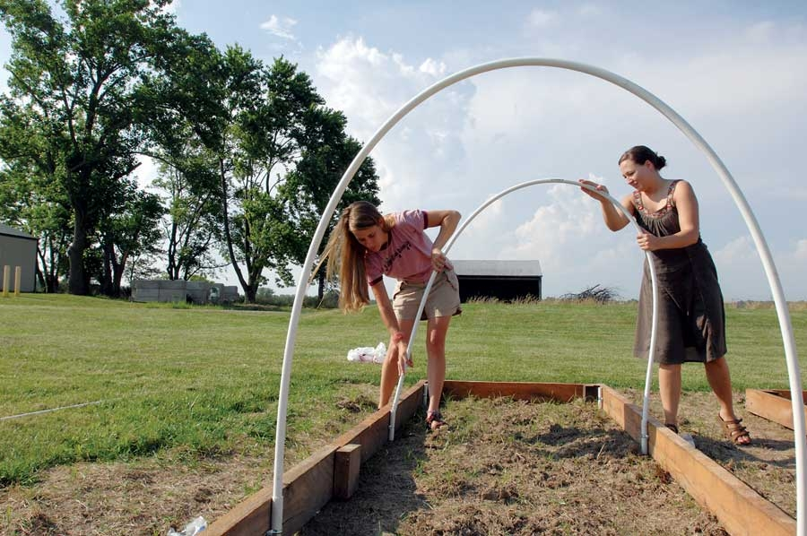
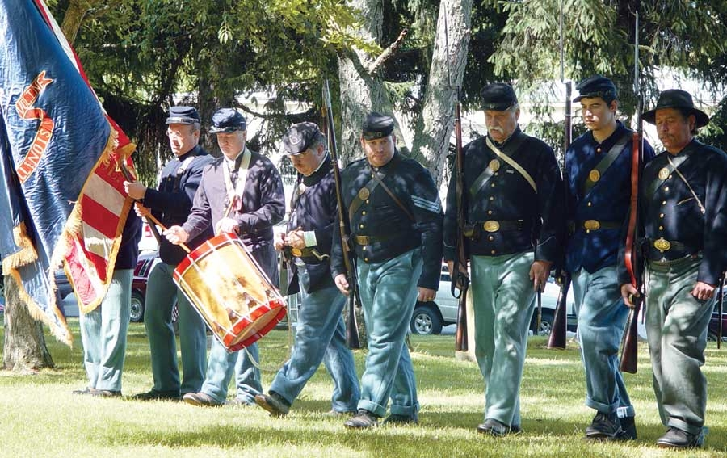

What do architect Buckminster Fuller, radical entertainer Dick Gregory and musician Shawn Colvin have in common? All three spent formative years in the intellectual, artistic and activist hothouse that is Carbondale, Ill.
Located near the southwest tip of the state, Carbondale has a population of about 43,000. Half of them are permanent residents, and the other half are students at Southern Illinois University. This mix is in large part the soul of the town’s identity.
“It’s one of the smallest cities with a large university,” says Francis Murphy, general manager of the Neighborhood Co-op Grocery. “The university has a huge cultural impact on everything from music to the arts to the speakers who come to town. We get a diversity of experience that normally wouldn’t be found in a town this size.”
A few examples: The town has two daily and two alternative weekly newspapers, a volunteer-run community radio station, two independent record stores and a half-dozen independent bookstores. Carbondale also hosts the Big Muddy Film Festival, billed as one of the oldest student-run festivals in the country, which runs for two weeks every spring and features an impressive list of independent and experimental works. A thriving club scene boasts a variety of hometown acts as well as traveling shows.
The university has an equal impact on local government. The city’s mayor, Brad Cole, was elected to his first term at 31 years old, which at the time made him the youngest mayor in the country. And the town policies are decidedly progressive and green - where else can you find a city-run program to encourage homeowners to invest in a rain collection system to conserve water?
Past the outskirts of town is beautiful countryside with abundant recreational possibilities. Chief among them is Shawnee National Forest’s 300,000 acre wilderness - a mere 10 minutes from town - which features some of the best rock climbing available.
The hilly character of the region rules out the mega-farming that’s blighted so much rural farmland. Instead, small-scale farmers are proliferating, Murphy says. Both the co-op, which recently expanded, and the Main Street Growers Market feature a wide range of locally grown organic produce, including peaches, apples and other fruits. Since the 1980s, a growing number of vintners have established vineyards and wine-making facilities in the region. More than a dozen of these offer tours and a variety of vintages.
Population: 43,000
Median Household Income: $15,882
Weather: A humid southern/Midwest climate with winter temperatures that dip into freezing. Average snowfall is about 14 inches.
What Makes It Great: An overgrown college town in a beautiful setting, with entertainment to suit all.
|
 SOUTHERN ILLINOIS UNIVERSITY Southern Illinois University students are attempting to provide the school with its own organically grown produce. |
 PAUL BRINKER/ENJOY ILLINOIS The Woodlawn Cemetery Civil War memorial service was one of the first in the country. |
|